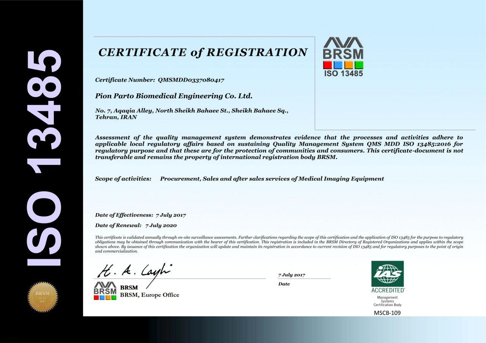
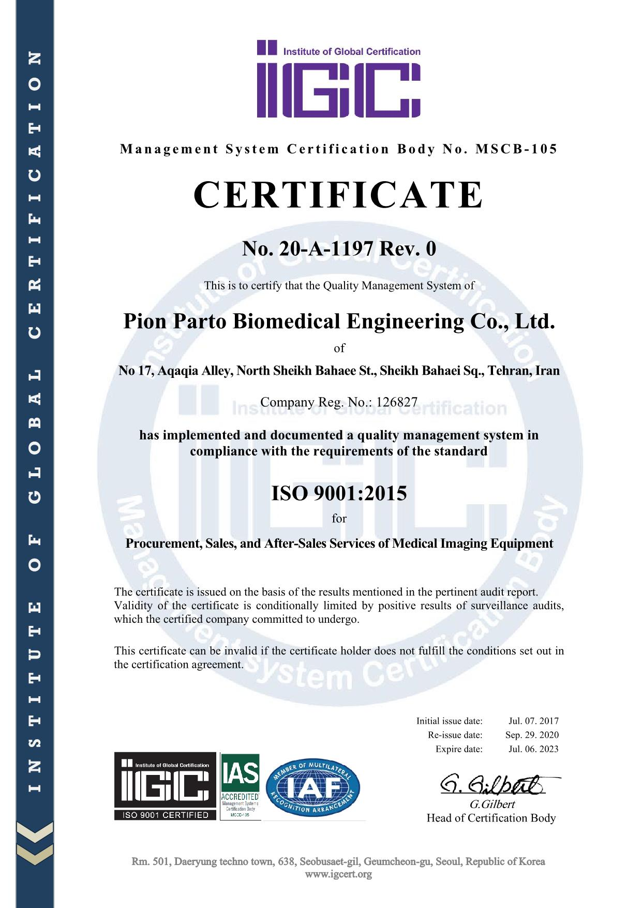
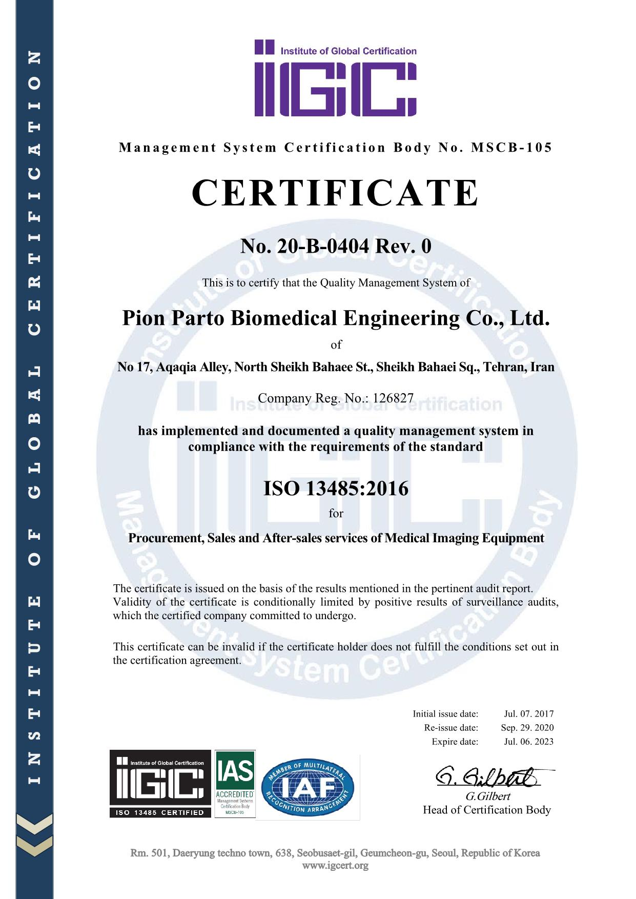

Under Construction...
My Professional Experience
Doctoral Researcher
Organization: Northeastern University, Boston, MA, USADuration: 2021 - Present
Responsibilities:
Graduate Researcher
Organization: Amirkabir University (Tehran Polytechnic), Tehran, IranDuration: 2017 - 2020
Responsibilities:
Quality Management System (QMS) Coordinator
Organization: Pion Parto Biomedical Engineering Co. Ltd., Tehran, IranDuration: 2016 - 2021
Responsibilities:
- Contributed to the initial design and implementation of QMS in alignment with ISO 9001 and ISO 13485.
- Assisted in the development and maintenance of quality management documentation.
- Collaborated with cross-functional teams to ensure compliance with quality standards and improve quality processes.
- Facilitated and coordinated training sessions for staff on quality management practices and assurance protocols.
- Conducted internal audits to ensure compliance with QMS standards.
- Conducted regular reviews and updates of quality management processes.
- Monitored and reported on QMS performance metrics to senior management.
- Assisted in the preparation for external audits and certifications.
- Supported the organization in achieving and maintaining ISO certifications.
2017 ISO 9001:2015 Certification

2017 ISO 13485:2016 Certification
 2018 ISO 9001:2015 Certification
2018 ISO 9001:2015 Certification
 2018 ISO 13485:2016 Certification
2018 ISO 13485:2016 Certification

2020 ISO 9001:2015 Certification

2020 ISO 13485:2016 Certification